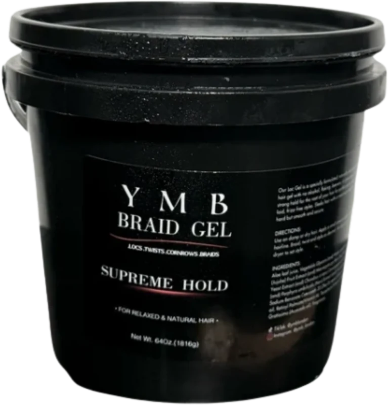

Key ingredients
Aloe Leaf Juice
Soothes and hydrates the scalp
Castor Seed Oil
Locks in moisture and softens edges
Vitamin E
Protects and nourishes the scalp

YMB London Braiding Gel
Why the YMB braiding gel?
Braiding gel sits on your scalp and edges for weeks while you wear a protective style, so what is in it really matters. Many conventional gels use drying alcohols, silicones and harsh preservatives that can leave flakes, build up and a dry, itchy scalp. Choosing a natural, plant based gel means your braids can stay sleek whilst your hair and scalp stay moisturised, which helps minimise the damage that styling can do and can work to support your healthy hair underneath your style.
About the gel
Infused with nourishing oils like coconut and jojoba, as well as hydrating aloe vera, it promotes scalp health and keeps hair moisturised while taming frizz and flyaways.
Free from parabens, sulfates, silicones, and artificial fragrances.
Full ingredients
Aloe Leaf Juice, Vegetable Glycerin, Water, Zizyphus Jujuba Fruit Extract, Macrocystis Pyrifera (Sea Kelp) Extract, Chondrus Crispus (Irish Moss) Extract, Porphyra Umbilicalis (Sea Kelp) Extract, Gluconolactone, Sodium Benzoate, Ceteareth-20, Olive Fruit Oil, Castor Seed Oil, Retinyl Palmitate (Vitamin A), Tocopherol (Vitamin E), Biotin, Persea Gratissima (Avocado) Oil, Fragrance.